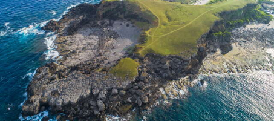
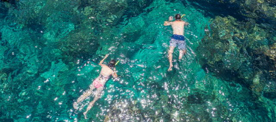
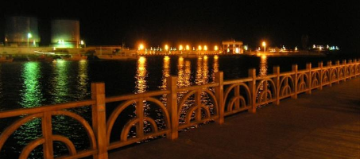
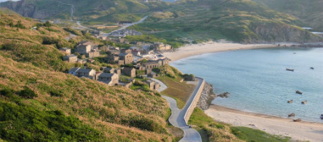
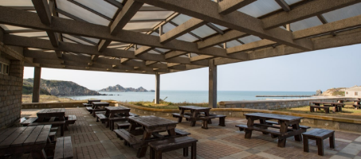
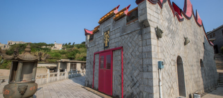

探索 您想去的地方
搜尋結果，共有 64 筆
-

帆船鼻大草原
帆船鼻位於綠島東南角，有「綠島地毯」之稱，可由朝日溫泉售票口旁邊的小徑沿步道而上。由於地形突出，地勢又高出四周，屬東北季季風可長驅直入的衝風帶；再加帆船鼻位於綠島東南角，有「綠島地毯」之稱，可由朝日溫泉售票口旁邊的小徑沿步道而上。由於地形突出，地勢又高出四周，屬東北季季風可長驅直入的衝風帶；再加
臺東縣全天候開放 -
哈巴狗與睡美人岩
睡美人岩與哈巴狗岩靜臥在海參坪上，是綠島最著名的景點之一，從小長城步道遠眺，可以見到睡美人靜靜地躺臥在海面上，白色的沙灘是她秀麗的長髮，而垂著長耳朵睡美人岩與哈巴狗岩靜臥在海參坪上，是綠島最著名的景點之一，從小長城步道遠眺，可以見到睡美人靜靜地躺臥在海面上，白色的沙灘是她秀麗的長髮，而垂著長耳朵
臺東縣全天候開放 -

柴口浮潛區
早期稱為柵口，後來更名為「柴口」，為綠島主要浮潛區之一。海岸地形以珊瑚裙礁為主體，是綠島僅有的兩處沙灘之一。 此為初級潛水區，觀光局東管理處在此設置潛早期稱為柵口，後來更名為「柴口」，為綠島主要浮潛區之一。海岸地形以珊瑚裙礁為主體，是綠島僅有的兩處沙灘之一。 此為初級潛水區，觀光局東管理處在此設置潛
臺東縣全天候開放 -

馬公港 漁人碼頭
馬公第二漁港延伸至馬公第一漁港是一條長長的木棧道，這裡就是漁人碼頭，早晚都有不少人悠閒散步著，在漁人碼頭中段的「菊島之星」，是一間船造型的漁產品直銷馬公第二漁港延伸至馬公第一漁港是一條長長的木棧道，這裡就是漁人碼頭，早晚都有不少人悠閒散步著，在漁人碼頭中段的「菊島之星」，是一間船造型的漁產品直銷
臺東縣全天候開放 -

福正沙灘
福正聚落前的美麗金黃沙灘 順著福正聚落裡的小徑走向海邊，會發現一抹潔白正在海陸交界處，隨著海風浪潮流轉靜臥，那正是被村落圍繞的福正沙灘。這裡海水清澈見福正聚落前的美麗金黃沙灘 順著福正聚落裡的小徑走向海邊，會發現一抹潔白正在海陸交界處，隨著海風浪潮流轉靜臥，那正是被村落圍繞的福正沙灘。這裡海水清澈見
臺東縣全天候開放 -

莒光遊客中心
馬祖莒光鄉舊時稱白肯，因「肯」為福州話「犬」之擬音，又稱之為白犬，兩座島嶼山形像似兩隻小狗趴臥在海面上，因而稱東島為東犬島、西島為西犬島，1971年更馬祖莒光鄉舊時稱白肯，因「肯」為福州話「犬」之擬音，又稱之為白犬，兩座島嶼山形像似兩隻小狗趴臥在海面上，因而稱東島為東犬島、西島為西犬島，1971年更
臺東縣全天候開放 -

福正聚落
簡單樸實閩東風情 見證聚落遷徙 來到東莒島必訪景點－福正聚落，樸素景色令人印象深刻，在東莒當地有句俗諺：「夏福正，冬大浦」，由於大浦村位於南端，冬季簡單樸實閩東風情 見證聚落遷徙 來到東莒島必訪景點－福正聚落，樸素景色令人印象深刻，在東莒當地有句俗諺：「夏福正，冬大浦」，由於大浦村位於南端，冬季
臺東縣全天 -
外傘頂洲沙灘
外傘頂洲位於雲林、嘉義外海約10多公里處，現存面積約100餘公頃，因形狀似傘得名，是臺灣最大的沙洲。外傘頂洲受到波浪、沿岸流及東北季風影響，平均每年往西外傘頂洲位於雲林、嘉義外海約10多公里處，現存面積約100餘公頃，因形狀似傘得名，是臺灣最大的沙洲。外傘頂洲受到波浪、沿岸流及東北季風影響，平均每年往西
雲林縣全年皆可，無時間限制(00:00~24:00) -
龜山島賞鯨豚
龜山島曾被國際知名自然網站《WHEN ON EARTH》列為全世界最酷的小島之一，來到東北角除了觀覽濱海美景和壯麗的巨岩礁石，現在還可搭上船航向宜蘭外海上的神龜山島曾被國際知名自然網站《WHEN ON EARTH》列為全世界最酷的小島之一，來到東北角除了觀覽濱海美景和壯麗的巨岩礁石，現在還可搭上船航向宜蘭外海上的神
宜蘭縣需事先預約訂購賞鯨豚行程及船隻，龜山島開放登島時間為每年3月1日至11月30日之每日09:00-17:00。但每年6.7.8.9月份，得配合天候調整為每日08:30-17:30，如遇天候不佳則封島禁止進入。 -
龜山島生態旅遊
太平洋上一座遺世般的小島，白茫茫的迷霧籠罩讓她始終帶著一股神秘氛圍，過去只能從遠處遙望，充滿好奇與想像，而如今已可搭船登島，一探龜嶼剛柔並濟的島上風太平洋上一座遺世般的小島，白茫茫的迷霧籠罩讓她始終帶著一股神秘氛圍，過去只能從遠處遙望，充滿好奇與想像，而如今已可搭船登島，一探龜嶼剛柔並濟的島上風
宜蘭縣每年3月1日至11月30日之每日09:00-17:00。登島申請方式：欲申請登島者請於登島日前20至3天，以網路方式向交通部觀光局東北角暨宜蘭海岸國家風景區管理處申請，再陸續完成登島手續，登島名額每日額滿為止。 -
朝陽漁港
位於蘇澳鎮朝陽里(俗稱大南澳)海邊，北為烏石鼻自然保留區做為天然的屏障，加上附近海域資源豐富，因此，朝陽漁港旁成為磯釣客的最愛，也是蘇澳鎮南邊漁獲最豐位於蘇澳鎮朝陽里(俗稱大南澳)海邊，北為烏石鼻自然保留區做為天然的屏障，加上附近海域資源豐富，因此，朝陽漁港旁成為磯釣客的最愛，也是蘇澳鎮南邊漁獲最豐
宜蘭縣全天 -

花瓶岩
花瓶岩，因珊瑚礁石受地殼運動推擠而升出水面，經海水反覆沖蝕，使外觀猶如花瓶瓶身而得名；將視線停留岩石頂端，這裡生長了一叢叢綠色植物，像是隨意拾起一把花瓶岩，因珊瑚礁石受地殼運動推擠而升出水面，經海水反覆沖蝕，使外觀猶如花瓶瓶身而得名；將視線停留岩石頂端，這裡生長了一叢叢綠色植物，像是隨意拾起一把
屏東縣全日開放